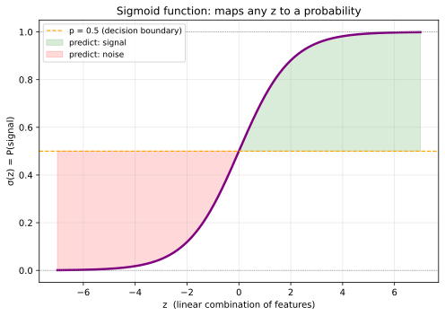
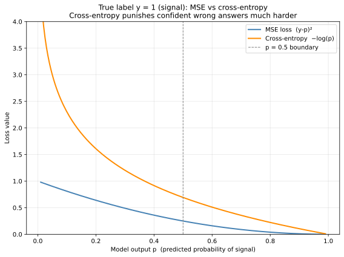
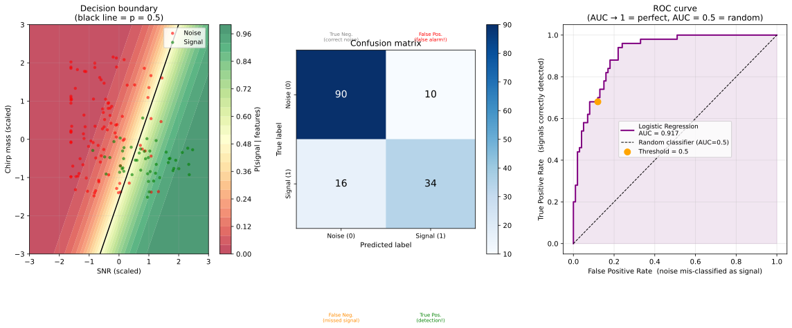

Machine Learning from Scratch: a Physicist's Road to Generative Models II
Section 2: Classification: Teaching a Model to Make Decisions
From numbers to choices
In the previous blog, we taught a model to predict a number, the luminosity of a star given its distance, or the flux of a source given its position. The model output lived on a continuous real line, the loss was Mean Squared Error, and the whole exercise was a dressed-up version of the \(\chi^2\) fitting you have done a hundred times. The machinery was familiar even if the language was new. Now we ask a different kind of question. Not "how bright is this source?" but "is this source real, or is it an artefact?" Not "what is the energy of this particle?" but "is this a Higgs decay or a QCD background event?" The output is no longer a number on a continuous scale. It is a decision from a discrete set of options a category. This is classification, and it is arguably the most common task in experimental physics today. The good news is that the core principle from the previous blog does not change at all. We still choose a model, define a loss function, and minimise that loss over the data. What changes are two things: the model must now output a probability rather than an arbitrary real number, and we need a loss function that is appropriate for probabilities. Both changes turn out to be elegant and well-motivated.
Why physicists need classification
Before getting into the mechanics, it is worth dwelling on why this matters in your field specifically, because the applications are everywhere and they are consequential. In gravitational-wave astronomy, LIGO and Virgo produce strain time-series sampled at thousands of hertz. After the matched-filter pipeline processes the data, it produces a list of triggers, time stamps where the filter output exceeded some threshold. The overwhelming majority of these triggers are instrumental glitches: scattered light artefacts, seismic transients, electronic noise. A real compact binary merger is one event buried among tens of thousands of noise triggers per day. The pipeline then characterises each trigger with a set of features: the signal-to-noise ratio (SNR), the chirp mass inferred by the best-matching template, the coherence between the two LIGO detectors and Virgo, the \(\chi^2\)-based signal consistency test, and several others. A classifier takes these features and assigns each trigger a probability of being a genuine astrophysical event. This probability is what PyCBC calls the ranking statistic and what GstLAL calls the likelihood ratio. Understanding classification is understanding how modern GW searches make decisions.
In particle physics, the situation at a hadron collider is structurally identical. A proton-proton collision produces hundreds of particles, reconstructed as jets, leptons, and missing transverse energy. Most collisions are QCD multijet events background. A rare few are the signal process you care about, whether that is a Higgs boson decaying to two photons, a top quark pair, or a hypothetical new resonance. A classifier trained on Monte Carlo simulations takes the event kinematics as input and outputs a probability that the event is signal. The cut you place on that probability defines your selection, and the trade-off between signal efficiency and background rejection is at the heart of every search analysis.
In gamma-ray astronomy, the Fermi-LAT must decide, photon by photon, whether a detected event is a real gamma-ray or a charged cosmic-ray background event that leaked through the detector's veto. In radio astronomy, every candidate pulsar must be separated from radio-frequency interference. In multi-messenger follow-up campaigns, sky localisation alerts must be classified as binary neutron star, neutron star–black hole, or binary black hole mergers to decide which telescopes to point. Classification is not a peripheral machine learning application in astrophysics, it is the central computational task.
What changes from regression
In regression, the model output \(\hat{y}\) was any real number: positive, negative, large, small. There were no constraints on it. In classification, we need the model to output a probability, a number between 0 and 1 representing the model's confidence that an event belongs to the positive class (say, signal). Call this \(p=P(y=1∣x)\). The complementary probability \(1−p\) is then the probability of the negative class (noise). This constraint \(p \in [0,1]\) is the first new ingredient. The second is the loss function. We will see shortly that MSE, which worked well for regression, is a poor choice for probabilities, and the right replacement emerges naturally from a beautiful detour through information theory.
The sigmoid: squashing a line into a probability
The linear model from the previous blog computes: \[ z = \theta_0 + \theta_1 x_1 + \theta_2 x_2 + \cdots = \boldsymbol{\theta}^\top \mathbf{x} \] This \(z\) can be any real number. To convert it into a probability, we apply the sigmoid function \(\sigma\): \[ p = \sigma(z) = \frac{1}{1 + e^{-z}} \] It is worth pausing to appreciate why this formula works so well. When \(z\) is very large and positive, \(e^{-z} \approx 0\) and \(p \approx 1\). When \(z\) is very large and negative, \(e^{-z} \to \infty\) and \(p \approx 0\). When \(z = 0\), \(p = 0.5\) exactly — the model is completely uncertain. The sigmoid smoothly maps the entire real line into the open interval \((0,1)\), giving us a valid probability for any linear combination of features. The point \(z = 0\), where the model transitions from predicting noise to predicting signal, is called the decision boundary. In two dimensions it is a line; in \(D\) dimensions it is a hyperplane. The full model, a linear combination of features fed into a sigmoid,is called logistic regression. Despite the name, the logistic regression is a classification model. The word regression refers to the internal linear step, not to the type of output.

*Figure 1 — The sigmoid function \(\sigma(z)\). For large positive \(z\) the model is confidently predicting signal (green region); for large negative \(z\) it predicts noise (red region). At \(z = 0\) the model is uncertain: \(p = 0.5\) is the natural decision threshold.*
The right loss function: a path through information theory
We now need to choose a loss function. The natural first instinct is to reuse MSE: just compute \((y_i - p_i)^2\) and minimise. This actually works, in the sense that gradient descent1 will converge to something reasonable. But it is not the right choice, and using it means leaving accuracy on the table. To understand what the right loss is and why, we need to take a short detour into information theory. It is a detour well worth taking.
Entropy: measuring surprise
Imagine you are monitoring a detector that, on any given day, reports one of two outcomes: either everything is quiet (outcome \(A\)) or a transient glitch occurred (outcome \(B\)). Consider two extreme scenarios. In scenario 1, the detector almost never glitches: \(P(A) = 0.99\) and \(P(B) = 0.01\). If the report comes in and says "quiet day," you are completely unsurprised, because that was the overwhelmingly likely outcome. If it says "glitch," you are very surprised. Most days carry almost no information because you already knew what would happen. In scenario 2, the detector glitches roughly half the time: \(P(A) = 0.50\) and \(P(B) = 0.50\). Now every daily report carries a genuine surprise. You have no idea what to expect, and each outcome tells you something meaningful. Claude Shannon formalised this intuition in 1948 with the concept of entropy, defined for a distribution \(P\) over \(K\) possible outcomes as: \[ H(P) = -\sum_{k=1}^{K} P(k) \log P(k) \] The unit depends on the base of the logarithm: base 2 gives bits, natural log gives nats. Let us compute it for our two scenarios using natural log.
For scenario 1: \[ H = -[0.99 \ln(0.99) + 0.01 \ln(0.01)] \approx -[-0.01005 + (-0.04605)] \approx 0.056 \text{ nats} \] For scenario 2: \[ H = -[0.5 \ln(0.5) + 0.5 \ln(0.5)] = -\ln(0.5) \approx 0.693 \text{ nats} \]
The perfectly uncertain distribution has entropy \(\approx 0.693\) nats; the nearly deterministic one has entropy \(\approx 0.056\) nats. Entropy is a precise measure of how much uncertainty (or surprise) is baked into a distribution. A fair coin has maximum entropy; a coin that lands heads 99% of the time has very low entropy.
Cross-entropy: comparing two distributions
Now suppose we have a true distribution \(P\) (the actual labels: this event really is signal or really is noise) and a model distribution \(Q\) (our model's predicted probabilities). How well does \(Q\) approximate \(P\)?
The cross-entropy between \(P\) and \(Q\) is: \[ H(P,Q) = -\sum_{k} P(k) \log Q(k) \] Compare this to the entropy \(H(P) = -\sum_{k} P(k) \log P(k)\). The only difference is that we have replaced \(P(k)\) inside the logarithm with \(Q(k)\). Cross-entropy asks: "how surprised would I be, on average, if I were expecting distribution \(Q\) but events were actually drawn from distribution \(P\)?"
It can be shown that \(H(P,Q) \geq H(P)\), always, with equality if and only if \(P = Q\). This is a direct consequence of the non-negativity of the Kullback-Leibler (KL) divergence 2. The cross-entropy is minimised when our model \(Q\) perfectly matches the true distribution \(P\). This makes it the natural training objective: we want to find the parameters \(\theta\) that bring \(Q_\theta\) as close to \(P\) as possible, which means minimising \(H(P,Q_\theta)\).
The binary cross-entropy loss
In binary classification, the true label \(y_i \in \{0, 1\}\) defines a distribution over two outcomes: \(P = (y_i,\, 1 - y_i)\). The model's prediction \(p_i = \sigma(z_i)\) defines another: \(Q = (p_i,\, 1 - p_i)\). Substituting into the cross-entropy formula and averaging over all \(N\) training examples gives the binary cross-entropy loss, also called log-loss: \[ L(\theta) = -\frac{1}{N} \sum_{i=1}^{N} \left[ y_i \log p_i + (1 - y_i) \log(1 - p_i) \right] \] Read this term by term. When \(y_i = 1\) (the event is genuinely signal), the second term vanishes and only \(-\log p_i\) contributes. If the model correctly assigns \(p_i \approx 1\), then \(-\log(1) = 0\): no penalty. If the model wrongly assigns \(p_i \approx 0\), then \(-\log(0) \to \infty\): a catastrophic penalty. When \(y_i = 0\) (the event is noise), by symmetry, only \(-\log(1 - p_i)\) contributes, and the same logic applies. The loss function screams loudest at confident wrong answers, which is exactly the behaviour you want in a detection (classification) task.
The figure below makes this concrete by comparing MSE and cross-entropy as a function of the model's predicted probability, for a true label of \(y = 1\).

*Figure 2 — Both losses are plotted for a true label \(y = 1\) as a function of the model's predicted probability \(p\). MSE (blue) grows quadratically and remains finite even at \(p = 0.01\). Cross-entropy (orange) diverges logarithmically as \(p \to 0\), imposing a crushing penalty on confident mistakes. This asymmetry is why cross-entropy produces better-calibrated classifiers.*
Notice also the connection to maximum likelihood estimation, which will feel familiar from the previous blog. The probability of observing a label \(y_i\) given the model output \(p_i\) is: \[ P(y_i \mid p_i) = p_i^{y_i} \cdot (1 - p_i)^{1 - y_i} \]
This is simply a Bernoulli probability: \(p_i\) when \(y_i = 1\), and \(1 - p_i\) when \(y_i = 0\). Taking the log and summing over all events: \[ \log L(\theta) = \sum_{i=1}^{N} \left[ y_i \log p_i + (1 - y_i) \log(1 - p_i) \right] \]
Minimising the cross-entropy loss is therefore identical to maximising the log-likelihood of the data under a Bernoulli model. Just as minimising MSE was equivalent to maximising a Gaussian likelihood in the previous blog, minimising cross-entropy is equivalent to maximising a Bernoulli likelihood here. The loss function is never an arbitrary choice, it always encodes an assumption about the statistical nature of the output.
From probability to decision: the classification pipeline
With the model and loss defined, the full pipeline looks like this. First, each event is described by a feature vector \(\mathbf{x}\), in a GW context this might be \(\mathbf{x} = (\text{SNR}, \text{chirp mass estimate}, \text{\(\chi^2\)-consistency}, \text{detector coherence})\). The model computes \(z = \boldsymbol{\theta}^\top \mathbf{x}\) and then applies the sigmoid to get \(p = \sigma(z)\). Training minimises the cross-entropy loss over all labelled events using gradient descent, exactly as in the previous blog. At inference time, a new trigger arrives, the model outputs \(p\), and a decision threshold converts this to a binary decision: if \(p > 0.5\), classify as signal; otherwise, noise.
The decision boundary — the set of all \(\mathbf{x}\) for which \(p = 0.5\), i.e. \(z = 0\) is a hyperplane in feature space. This is the geometric meaning of logistic regression: it partitions the feature space into two half-spaces with a flat cut. In the figure below, the boundary is the black line separating the green (signal) from the red (noise) region, and the background colour shows the predicted probability \(p\) across the entire feature space.

*Figure 3 — Left: the learned decision boundary in the two-dimensional (SNR, chirp-mass) feature space. The colour map shows \(P(\text{signal} \mid \mathbf{x})\), and the black contour is the \(p = 0.5\) boundary. Middle: the confusion matrix on the held-out test set. Right: the ROC curve (see the next section).*
Evaluating a classifier: beyond accuracy
Once a classifier is trained, how do we know if it is good? Accuracy, which is the fraction of events correctly classified, is the first thing people reach for, but it is deeply misleading whenever one class is much rarer than the other. In GW searches this is always the case: there might be tens of thousands of glitch triggers for every genuine astrophysical event. A model that labels every single trigger as "noise" achieves 99.9% accuracy while being completely useless. We need better metrics.
The confusion matrix is the starting point. It tabulates four counts: true positives \(\text{TP}\) (signal correctly identified), true negatives \(\text{TN}\) (noise correctly identified), false positives \(\text{FP}\) (noise mistakenly labelled signal: a false alarm), and false negatives \(\text{FN}\) (signal mistakenly labelled noise: a missed detection). In GW astronomy these map directly to the quantities that matter operationally: false positives cost telescope time on empty sky localisations; false negatives mean missed astrophysical events.
Precision is the fraction of predicted signals that are genuinely signals: \[ \text{Precision} = \text{TP} / (\text{TP} + \text{FP}) \] Recall (also called sensitivity or detection efficiency) is the fraction of true signals that were correctly identified: \[ \text{Recall} = \text{TP} / (\text{TP} + \text{FN}) \] The F1 score is their harmonic mean: \[ \text{F1 score} = 2 \cdot \text{Precision} \cdot \text{Recall} / (\text{Precision} + \text{Recall}) \] The F1 score is their harmonic mean. These three numbers tell you much more than accuracy alone.
The most important diagnostic in a physics search is the ROC curve (Receiver Operating Characteristic). It plots the true positive rate (detection efficiency) against the false positive rate (false alarm rate) as the decision threshold varies from 0 to 1. Every point on the curve represents a different operating point, a different trade-off between catching signals and tolerating false alarms. The AUC (Area Under the Curve) summarises the whole curve in one number: a perfect classifier has AUC = 1, a random classifier has AUC = 0.5. In the figure above (right panel), the orange dot marks the \(p > 0.5\) operating point; by moving the threshold you slide along the curve, trading efficiency for purity or vice versa. This is the ML equivalent of choosing a cut value in a traditional one-dimensional variable selection.
What the code does
The hands-on material for this section is in a dedicated Jupyter notebook in the accompanying GitHub repository ↗. Each section of this series has its own notebook, so you can work through them independently and at your own pace without wading through unrelated code 😇.
The accompanying The tutorial notebook ↗ builds a complete GW-inspired binary classification pipeline from scratch. It starts with Part A, which plots MSE and cross-entropy side by side for a fixed true label. Run this first and stare at the two curves until the logarithmic explosion of cross-entropy near \(p = 0\) feels intuitive rather than abstract. Part C generates a synthetic dataset of 600 noise triggers and 200 signal triggers, with features chosen to mimic the SNR and chirp-mass distributions you would see from a matched-filter pipeline, the class imbalance of 3:1 is realistic and intentional. Parts D and E train a classifier using sklearn and print a detailed classification report, including the cross-entropy loss on the held-out test set. Part F produces the three-panel figure above: decision boundary, confusion matrix, and ROC curve.
Pay particular attention to the printed confusion matrix and the AUC value. Try
moving the decision threshold manually in the code (search for predict_proba and
change the 0.5 cutoff) and observe how the confusion matrix changes. This is
the most important intuition to take away from this section: the threshold is a
policy choice, not a property of the model, and different physics analyses call
for different policies.
The full picture so far
After these two sections: Regression and Classification, the pattern is already visible. Regression chose a linear model and MSE loss. This is equivalent to Gaussian maximum likelihood. Classification chose the same linear model, added a sigmoid output layer, and switched to cross-entropy loss, equivalent to Bernoulli maximum likelihood. The optimisation machinery (gradient descent over the training data) did not change at all. The table below summarises where we stand.
| Regression | Classification | |
|---|---|---|
| Output | $\hat{y} \in \mathbb{R}$ | $p \in [0, 1]$ |
| Output layer | Identity | Sigmoid $\sigma(z)$ |
| Loss function | MSE | Cross-entropy |
| Statistical interpretation | Gaussian MLE | Bernoulli MLE |
| Evaluation metric | MSE, $R^2$ | AUC, precision, recall |
The one thing that has not changed is the central equation: \( \theta^* = \arg \min_{\theta} L(\theta) \). We are still rolling a ball downhill on the same loss landscape. In the next blog, we will ask what happens when a single linear boundary is not enough, when the signal and background regions are curved, overlapping, or interleaved in a way no hyperplane can separate. That is where neural networks enter, and you will see that they are simply a way of making \( f(x; \theta) \) more expressive without changing the loss function or the optimiser at all.
1 Gradient descent is an optimization algorithm that finds the minimum of a function by iteratively moving in the direction of the steepest descent. ↩
2 A quantity we will meet formally later when we talk about variational autoencoders. ↩